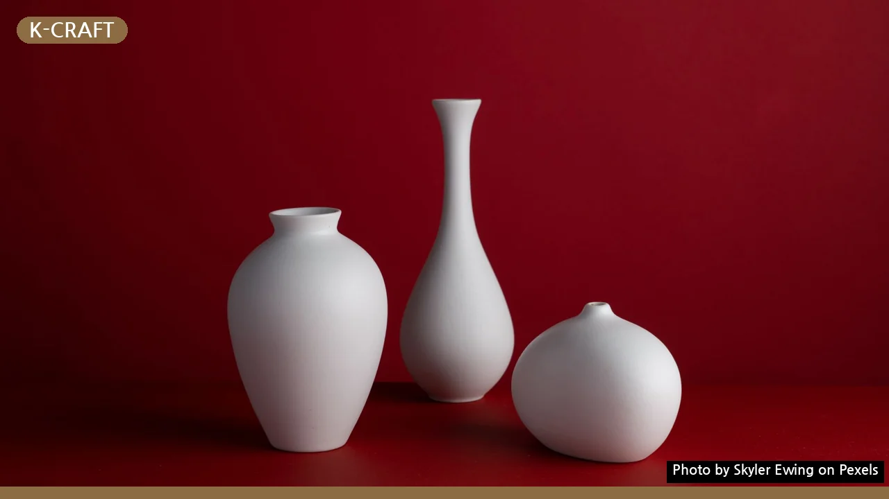
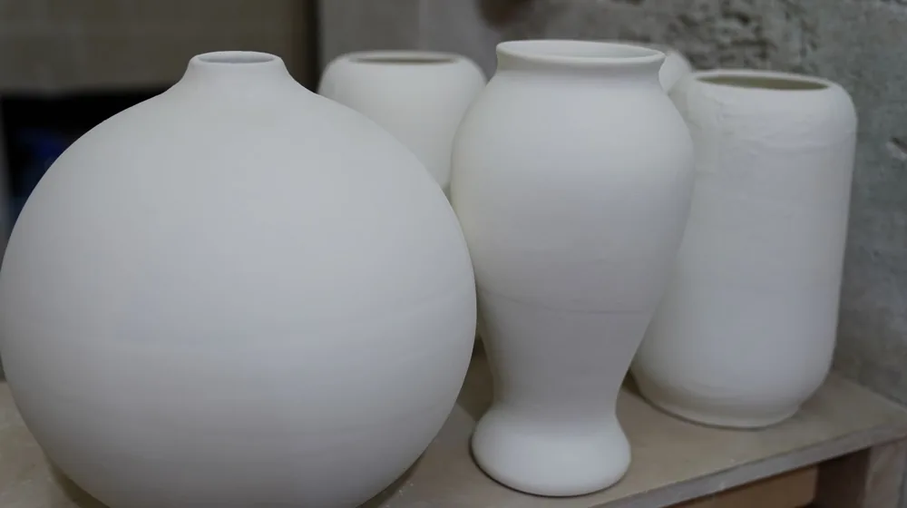

1인 가구도 부담 없이! K-공예 소품으로 나만의 공간 꾸미는 3가지 노하우
사진: Skyler Ewing / Pexels (무료 이미지, 출처 표기)
나만의 개성을 담은 1인 가구 공간, K-공예로 완성하는 법

혼자 사는 나만의 공간을 특별하게 꾸미고 싶지만, 어떤 소품을 어떻게 활용해야 할지 고민이 많으실 겁니다. 특히 작은 원룸이나 오피스텔에서는 공간 활용과 인테리어에 대한 부담이 따르기 마련입니다. 이럴 때 한국의 멋이 담긴 K-공예 소품은 좁은 공간에 깊이와 아름다움을 더하는 훌륭한 대안이 될 수 있습니다.
단순한 장식품을 넘어 실용성과 미학을 동시에 충족시키는 K-공예(한국 공예)는 전통적인 기법과 현대적 디자인이 조화된 한국의 수공예품을 통칭합니다. 이 글에서는 1인 가구가 K-공예 소품을 선택하고, 활용하며, 관리하는 구체적인 방법을 안내해 드립니다. 지금부터 나만의 개성이 담긴 공간을 K-공예로 완성하는 노하우를 확인해 보세요.
1인 가구 맞춤 K-공예 소품, 어떻게 고를까?
1인 가구의 공간은 보통 규모가 작으므로, 소품 선택 시 신중함이 필요합니다. K-공예 소품을 고를 때는 공간의 크기, 활용도, 그리고 재료의 특성을 고려하는 것이 중요합니다. 시각적으로 부담을 주지 않으면서도 공간에 포인트가 될 만한 아이템을 찾아야 합니다.
- 크기와 형태: 손바닥만 한 도자기 오브제, 벽에 걸 수 있는 작은 자수 작품, 탁상용 한지 조명 등 아담한 크기의 소품이 좋습니다. 불필요하게 부피가 크거나 공간을 많이 차지하는 소품은 피하는 것이 현명합니다.
- 활용도: 단순한 장식품을 넘어 실용적인 기능을 겸비한 소품을 선택하면 공간 효율성을 높일 수 있습니다. 예를 들어, 차를 마실 수 있는 다기 세트, 열쇠나 액세서리를 보관하는 작은 나무함, 연필꽂이로 활용 가능한 도자기 잔 등이 좋은 예시입니다.
- 재료의 특성: 한지(닥나무 섬유로 만든 한국 전통 종이), 도자기, 목공예, 자수 등 다양한 K-공예 재료는 각기 다른 분위기를 연출합니다. 따뜻하고 은은한 분위기를 선호한다면 한지나 목공예품을, 정갈하고 모던한 느낌을 원한다면 도자기를 추천합니다.
작은 공간을 돋보이게 하는 K-공예 인테리어 팁
작은 공간일수록 소품 배치에 따라 분위기가 크게 달라질 수 있습니다. K-공예 소품의 매력을 최대한 살리면서 공간을 넓어 보이게 하는 인테리어 팁을 소개합니다.
- 단일 포인트 활용: 여러 소품을 한꺼번에 두기보다는, 가장 마음에 드는 K-공예품 한두 개를 선별하여 시선을 집중시키는 단일 포인트로 활용하는 것이 좋습니다. 현관의 작은 벽면에 걸린 자수 액자나 거실 테이블 위 도자기 화병 등이 대표적입니다.
- 수직 공간 활용: 벽 선반이나 낮은 수납장 위에 K-공예 소품을 배치하면 시선을 위로 끌어올려 공간이 높아 보이는 효과를 줍니다. 선반 위 아담한 옹기나 한지 갓 조명을 두어 아늑한 분위기를 연출할 수 있습니다.
- 조명과의 조화: K-공예품은 조명과 함께 했을 때 더욱 아름다운 빛을 발합니다. 특히 한지 조명은 은은한 빛을 퍼뜨려 공간에 따뜻하고 편안한 느낌을 선사합니다. 일반 스탠드 옆에 작은 목공예 오브제를 두는 것도 좋은 방법입니다.
나에게 맞는 K-공예 소품 구매 가이드
K-공예 소품을 구매할 수 있는 경로는 다양합니다. 자신의 라이프스타일과 예산에 맞춰 가장 적합한 방법을 선택해 보세요.
- 온라인 플랫폼: '아이디어스', '네이버 스마트스토어' 등 온라인 수공예품 판매 플랫폼에서 다양한 K-공예 작가들의 작품을 만날 수 있습니다. 한국공예·디자인문화진흥원(KCDF)에서 운영하는 'KCDF 온라인숍'에서도 검증된 공예품들을 찾아볼 수 있습니다. 상세한 정보와 후기를 꼼꼼히 확인하고 구매를 결정하는 것이 좋습니다.
- 오프라인 마켓 및 갤러리: 직접 보고 만져보며 작품을 고르고 싶다면, 인사동, 북촌 등 공예 거리에 위치한 갤러리나 공예품 상점을 방문해 보세요. 지역별 문화재단이나 공예 박람회에서 진행하는 플리마켓도 좋은 기회가 됩니다. 작가와 직접 소통하며 작품의 배경 이야기를 들을 수도 있습니다.
- DIY 키트: 처음부터 큰 비용을 들이기 부담스럽거나 직접 만드는 즐거움을 느끼고 싶다면, 한지 공예, 도자기 페인팅, 자수 등의 DIY 키트를 활용해 보세요. 온라인 쇼핑몰에서 쉽게 구매할 수 있으며, 나만의 개성을 담은 소품을 완성할 수 있습니다.
K-공예 소품, 오래도록 아름답게 관리하는 비결
정성스럽게 고른 K-공예 소품을 오랫동안 변함없이 아름답게 유지하려면 재료별 특성에 맞는 관리가 필요합니다. 간단한 관리법을 통해 소품의 수명을 늘릴 수 있습니다.
K-공예 소품은 각각의 재료가 가진 고유한 특성을 이해하고 관리할 때 그 가치를 더욱 빛낼 수 있습니다. 평소 보관 장소의 습도와 온도에 유의하고, 주기적으로 깨끗하게 관리해 준다면 오랫동안 우리 곁에서 아름다움을 선사할 것입니다. 모든 정보는 2024년 5월 기준으로 작성되었으며, 정확한 최신 정보는 각 기관의 공식 홈페이지에서 다시 확인하시길 권장합니다.
🔗 이 글도 함께 보면 좋아요: 달항아리 모던 인테리어, 흔한 실수 없이 연출하는 3가지 비법
관련 추천 상품
한지 공예 키트, 도자기 소품, 자수 매트 관련 인기 상품 보러가기
이 포스팅은 쿠팡 파트너스 활동의 일환으로, 이에 따른 일정액의 수수료를 제공받습니다.